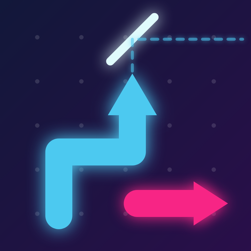

RICOCHET OUT
화살표를 탭하면 날아가고, 거울에 닿으면 꺾여요. 모든 화살표를 내보내세요.
📱 아이폰에 설치 Safari에서 누르세요. 설치 후 설정 → 일반 → VPN 및 기기 관리에서 신뢰가 필요할 수 있어요. 등록된 기기에서만 설치됩니다. ▶ 브라우저에서 바로 하기
화살표를 탭하면 날아가고, 거울에 닿으면 꺾여요. 모든 화살표를 내보내세요.
📱 아이폰에 설치 Safari에서 누르세요. 설치 후 설정 → 일반 → VPN 및 기기 관리에서 신뢰가 필요할 수 있어요. 등록된 기기에서만 설치됩니다. ▶ 브라우저에서 바로 하기